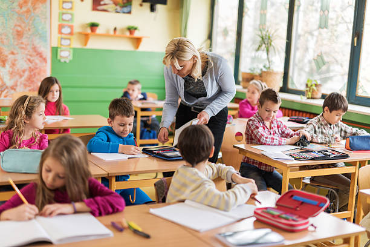

Jardin de Infantes y Maternal

En el Nivel Inicial estimulamos la curiosidad, la expresión en diferentes lenguajes y la construcción de
la identidad de cada niño y cada niña.
Proponemos experiencias que:
- Fomenten aprendizajes significativos para la vida desarrollando autonomía e iniciativa.
- Estimulen la capacidad de expresión de los pensamientos, sentimientos y emociones a través de diversos lenguajes.
Los dos estímulos semanales de Educación Física y de Educación Musical están a cargo de profesores especiales que trabajan en equipo con las docentes a cargo de cada grupo.
Colegio Sur Nivel Primario
En el Nivel Primario estimulamos que los estudiantes:
- construyan sus propios aprendizajes guiados por sus docentes y en forma colaborativa con sus pares.
- desarrollen el deseo de aprender, investigar y progresar en sus conocimientos así como las competencias que les permitan aprender a lo largo de la vida.
- convivan en un ambiente armónico, reconociendo y expresando sus emociones y resolviendo de modo adecuado los desafíos propios de cada edad.
- desarrollen el sentimiento de identidad y de pertenencia a su país y al Colegio del Sur
Colegio Sur Nivel Secundario

En el Nivel Secundario nos enfocamos a:
- estimular el compromiso de los estudiantes con sus recorridos de aprendizaje, con su entorno y con la comunidad de la que forman parte.
- favorecer el conocimiento de sí mismos y el desarrollo de sus fortalezas.
- impulsar proyectos interdisciplinarios donde se pongan en juego las diferentes competencias.
- prepararlos para la toma de decisiones consciente y responsable que los ayude a construir un proyecto de vida.
- A aprender
- Aprender a relacionarse
- Aprender a elegir
- Aprender a ser